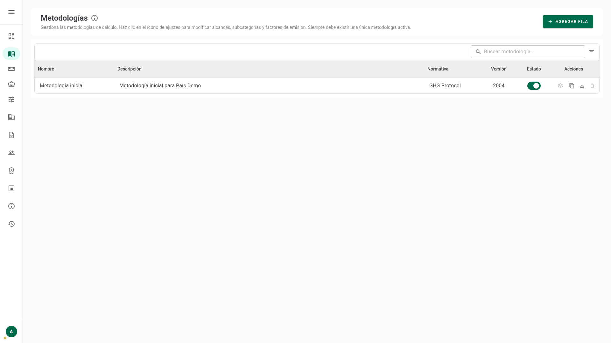
Comprender cómo cada elemento que configuras aquí cambia lo que la persona usuaria ve y hace en la calculadora de huella, paso a paso.
Dominar el flujo de trabajo duplicar → editar → activar, para mejorar la metodología sin afectar los cálculos ya realizados.
Crear por tu cuenta una metodología completa: alcances, fuentes, unidades, variables, factores y recomendaciones bien encadenados.
Este módulo define cómo se calcula la huella. La pantalla de inicio lista todas las versiones de metodología; solo puede haber una activa: es la base que la calculadora usará para todo cálculo nuevo.
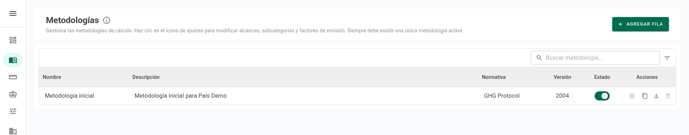
1 2 3 4 5 6La versión activa está bloqueada para proteger los cálculos en curso. Para introducir mejoras, duplícala, edita la copia con calma y actívala cuando esté lista.
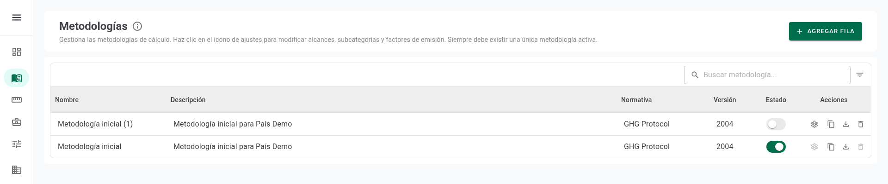
1 2 3 4Los alcances agrupan las fuentes de emisión. Su orden y su color se reflejan en toda la calculadora: en los pasos de captura y en el desglose de resultados.
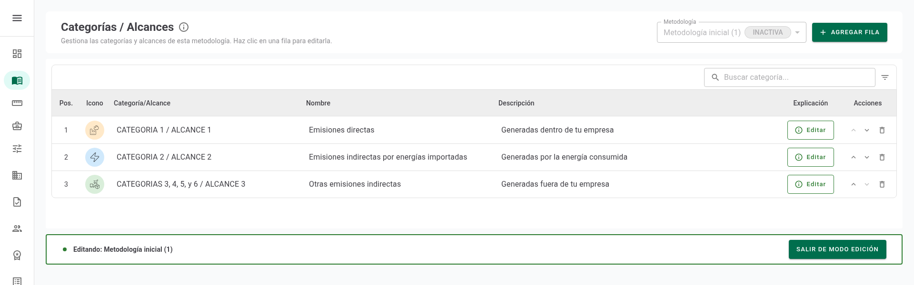
1 2 3 4 5 6Cada subcategoría es una fuente de emisión. Aparece como opción seleccionable en el paso de fuentes y, si se elige, como un bloque de captura donde se ingresan los datos.
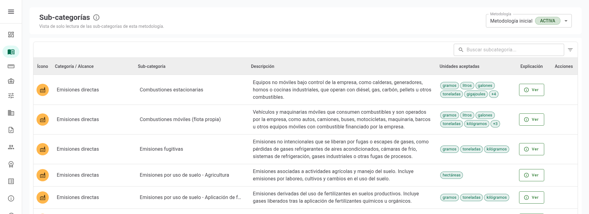
1 2 3 4 5 6Las dimensiones son los desplegables que la persona completa en cada línea (por ejemplo «Tipo» o «Combustible»). Sus valores son las opciones de ese desplegable, y lo que se elige es lo que selecciona el factor.
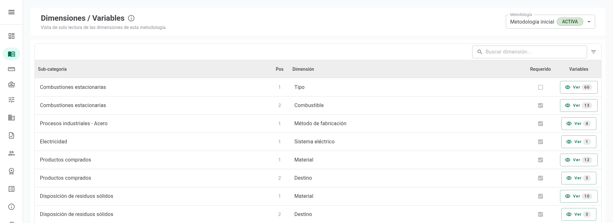
1 2 3 4 5El factor es el número por el que se multiplica la actividad. La regla es simple: emisión = actividad × factor. La persona usuaria lo ve en la captura y en el resumen.
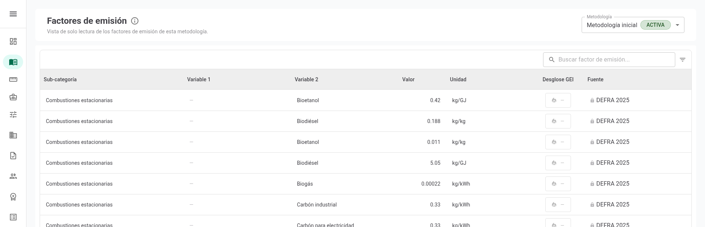
1 2 3 4 5 6Las recomendaciones conectan el rubro elegido en el perfilamiento con las fuentes sugeridas: al iniciar el cálculo, esas fuentes aparecen resaltadas y primero en la lista.
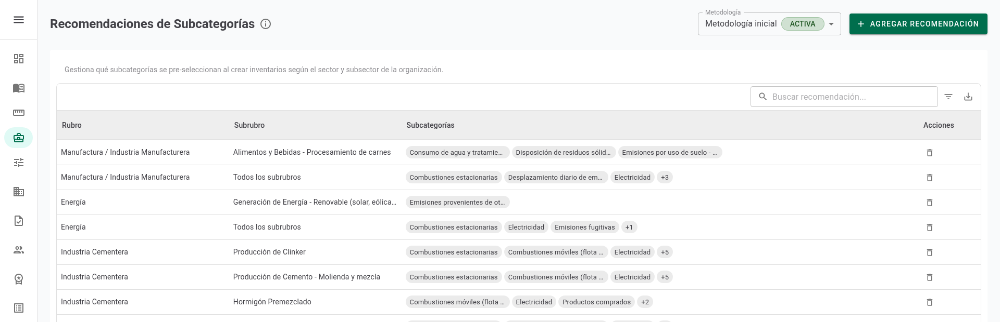
1 2 3 4 5La calculadora avanza en cinco pasos. Tu metodología no se ve en todos por igual: define lo que aparece en el 2, cómo se calcula en el 3 y lo que se muestra en el 5.
Aquí se refleja tu configuración: los alcances agrupan y colorean, las subcategorías son las fuentes seleccionables y tus recomendaciones las destacan según el rubro.
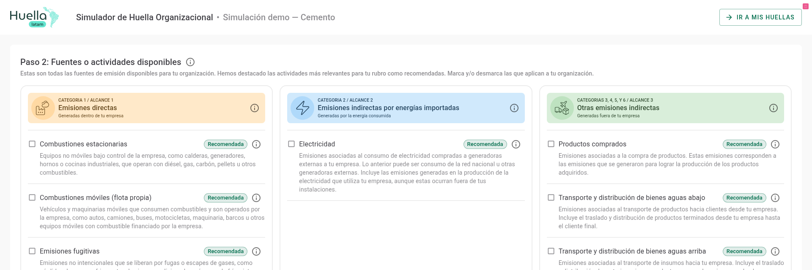
1 2 3 4Cada columna de captura nace de tu metodología. La persona ingresa la cantidad y el sistema resuelve el factor y la emisión: 5.000 L × 2,57 kg/L = 12,85 tCO₂e.
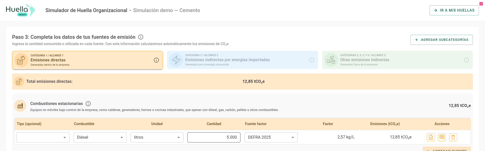
1 2 3 4 5El total y su desglose por alcance usan los colores que definiste y suman los factores aplicados. Así la organización ve el impacto de cada fuente.
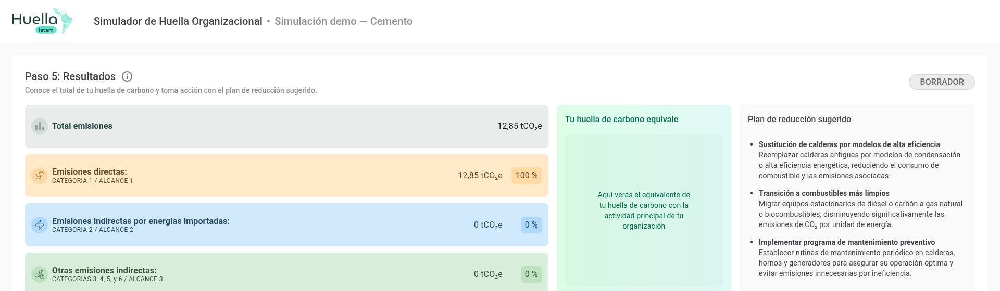
1 2 3 4Antes de activar tu copia, revisa que cada pieza esté encadenada. Así la calculadora funcionará de punta a punta para la persona usuaria.